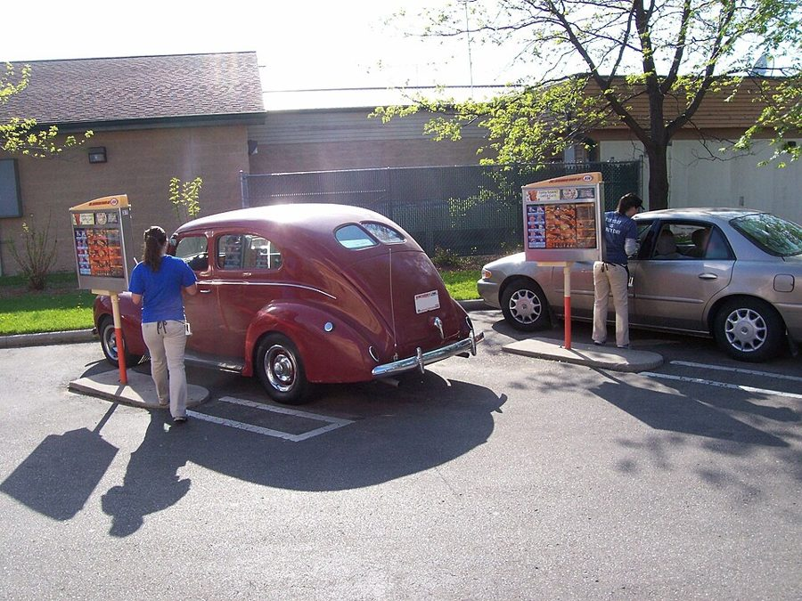
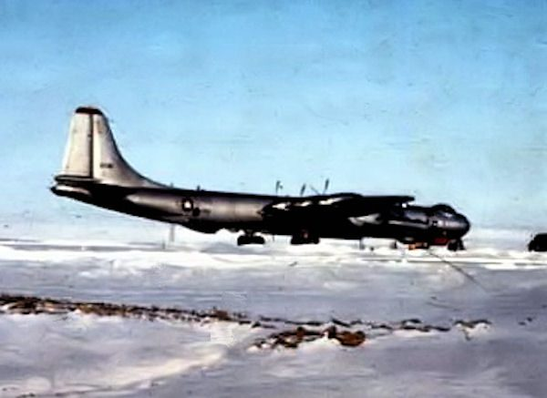
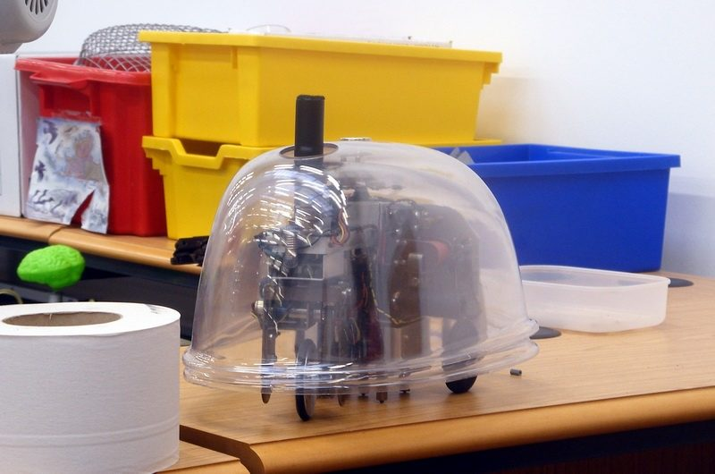
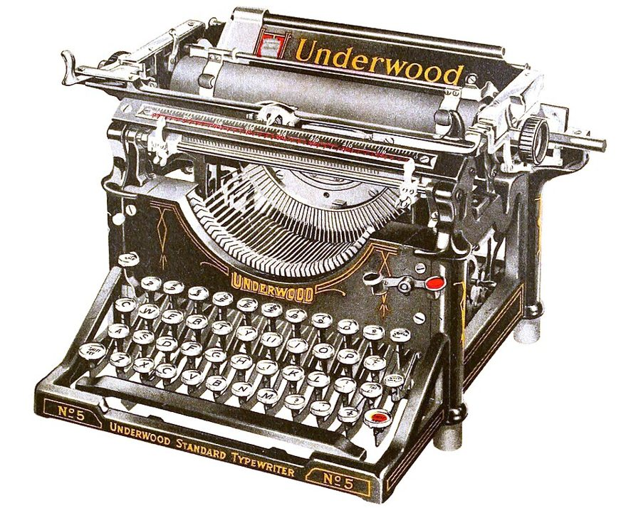
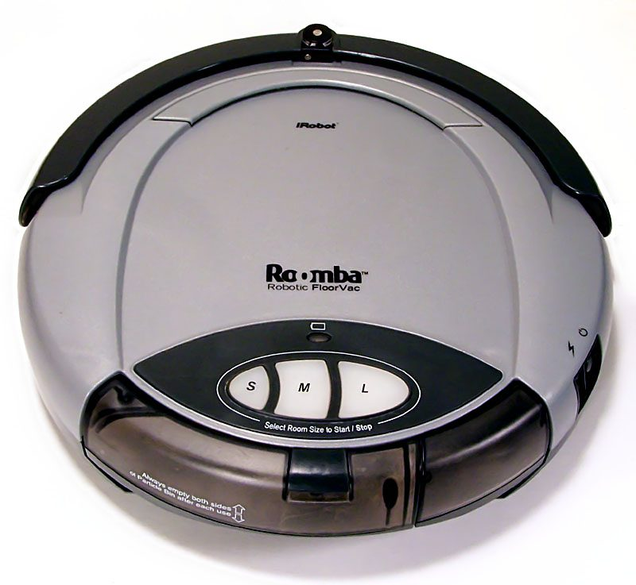

这一章在做什么
开头接着上一章的那个傍晚：Dan 开车离开市中心，一边找地方吃饭一边跟自己吵架，对话很少，几乎全是心里话。从第 20 段起转入长段回忆，一直到这一页结束都没有回来：他的名字、那场战争、战后和朋友在莫哈韦沙漠办的小厂、厂里造的机器、厂里先后出现的几个人。
军队俚语和工程师的行话都密，讲公司股份的那几句要慢读。抓三件事：他为什么非要自己当老板，那台机器到底新在哪，公司里谁说了算。
人物
都是虚构的人。老人物只写到上一章结束时你知道的，新人物只写身份。
Dan Davis叙述者「我」工程师，差几天满三十岁。上一章签了冷眠合同，被医生打了一针醒酒，第二天中午要回去做最后检查。
PeteDan 的公猫躺在旅行包里跟着走。它的叫声 Dan 照样当人话听。
Miles Gentry上一章只有名字上一章和 Belle 并提，没说是谁。这一页的回忆里交代他和 Dan 是怎么认识的、合伙做什么。
Belle DarkinDan 原本要娶的人上一章 Dan 最想躲开的人。这一页的回忆里第一次正面出场。
Ricky新Frederica，小女孩回忆里的孩子。她和 Miles、和 Pete 是什么关系，第 22 段一口气交代，读慢一点。
Dan 的父亲新只提到，没出场回忆的第一段讲他给儿子起名字的用意。
体检医生没出场上一章那位说话很冲的医生。Dan 在车里一直在回想他的话，叫他 the doc。
场景地图
这一页是第 2 章的第 1–59 段，本站按场景分成 6 段。粗体是每个场景开头的几个词，照着它在书里找位置；读完一个场景回来打个勾。
- MY CAR WAS parked under …约 650 词接上一章的傍晚。Dan 在车里自问自答，全是心里话；留意最后他去打了一个电话。
- MY OLD MAN named me …约 550 词回忆开始：名字的来历、当兵、那场战争。军队俚语最密，冷眠的来历也在这里。
- The whole thing was a …约 900 词战后去沙漠里办厂。一台机器从想法到卖出去，工程的词和生意的词都多。
- Belle Darkin joined us soon …约 850 词三个人注册公司。先看股份和头衔怎么分，再看两个合伙人为什么事拌嘴。
- Belle Darkin smoothed over the …约 400 词Dan 眼里的 Belle。有一段对话；留意一件礼物，和讲它的最后两句。
- I worked harder than ever …约 400 词小女孩 Ricky。把几个年龄记下来：几岁认识的，哪年几岁。
背景：作者默认你知道的事
这些都是真实世界里的东西，1950 年代的美国读者一看就懂。按在书里出现的顺序排。
场景 1Pershing Square 和它底下的车库
洛杉矶市中心的广场。1950 年代初市里把整个广场挖开，在下面修了一座地下停车场，广场重新盖在车库顶上。所以第一句说车停在 under Pershing Square。
Western Avenue 是市中心以西几公里的一条南北向大街，名字就叫「西大街」。
场景 1drive-in 和 chicken in the rough

drive-in 餐厅：车开进车位，人不下车，服务员（carhop）到车窗边点菜、送餐。
照片：Royalbroil，CC BY-SA 3.0，维基共享资源（2009 年摄于威斯康星州，与本书无关）
汽车餐厅在 1950 年代的加州到处都是。带着猫的 Dan 喜欢它，原因书里自己说了。chicken in the rough 是 1930 年代起的一道连锁招牌菜：半只炸鸡配薯条，不给刀叉，用手抓着吃。
in the rough 是「粗着来、不加修饰」。
场景 1Section Eight
美国陆军条例里的第八节：因为精神上不适合服役而被退伍。当兵的把它当名词用，a Section Eight 就是「一个脑子有毛病的」。
Dan 当过兵，骂自己也用军队的词。
场景 2Daniel Boone
18 世纪的拓荒者，带人翻过阿巴拉契亚山，在肯塔基开路建寨。在美国人心里他是「一个人、一杆枪、谁也不靠」的代表。给儿子起这个名字，等于把一种活法写进了户口本。
场景 2brainwashing：1956 年的新词
这个词是从中文「洗脑」直译过去的，1950 年代初才进英语，说的是朝鲜战争（1950–1953）里美军战俘受到的思想改造。
这本书写的时候，战俘回国才两三年，「洗脑」是报纸上的热词，读者一看就知道指哪场战争。
场景 2Sandia、Thule、Nome

1950 年代，停在格陵兰 Thule 空军基地的 B-36 战略轰炸机。
美国空军，公有领域，维基共享资源
三个真地名。Sandia 基地在新墨西哥州 Albuquerque 城外，是战后美国组装、存放核武器的地方。Thule 是美国 1950 年代初在格陵兰西北角修的空军基地，离北极点约 1500 公里。Nome 在阿拉斯加西岸，对面就是苏联。
后两个是美国离苏联最近的冰天雪地。
场景 3“Q” clearance
美国原子能委员会发的最高一级安全许可，有了它才能接触核武器的设计资料。真有其事，现在归能源部管。
Dan 的意思是：我在军队里能看到的东西，外面的工程师看不到。
场景 3“Electric Turtles”

Grey Walter 机器龟的复制品。顶上的短筒里是一只光电管，它绕着轴转，替机器找光。
照片：Anders Sandberg，CC BY 2.0，维基共享资源
英国神经学家 Grey Walter 在 1948–1949 年造的小机器：三个轮子、一只光电管、两只真空管。它会朝着光走，撞上东西会绕开，电不足了自己回到充电的小窝。
《科学美国人》（Scientific American）1950 年有专文介绍。Dan 说他的机器「巡游的路数」是从这里拿的。
场景 3“spark of genius”：专利法里的一句话
1941 年美国最高法院在一个判例里说，够格拿专利的发明得显出 flash of creative genius，「创造天才的一闪」。工程师们很不服气：老老实实改进出来的东西算不算？
1952 年新专利法把这条去掉了，改成「对内行人不是显而易见」。Dan 拿这句话挖苦，是说给当时的同行听的。
场景 41908 年的 Underwood

Underwood 5 号打字机，20 世纪上半叶美国办公室里最常见的机型。图出自 1924 年的一则广告。
作者不详，公有领域，维基共享资源
纯机械，每个键要用力敲下去。1970 年还在用 1908 年的机器，是说小厂穷。后来换的「电动、高级字体、碳带」是当时最体面的商务信函配置，打出来像印刷品。
书里的世界
下面这些是设定。这一页补了不少那场战争和冷眠的来历，也第一次讲清了 Dan 造的是什么。第三列是真实世界里后来的事。
本站示意图，按第 23 段画的。4℃ 时水的密度最大是真的物理事实；其余都是设定。
| 书里的说法 | 在书里是什么 | 真实世界里 |
|---|
| automatic control / set the bug on arterial-west | 城里的干道上，车交给道路系统自动开，出了范围再切回手动。停车场收费的也是机器。bug 指什么没解释，多半是仪表上选路线的指针。 | 1956 年通用汽车的概念车 Firebird II 就宣传过「自动公路」。能上路的辅助驾驶是 21 世纪的事。 |
| the Six Weeks War（新细节） | 冷战「沸出了锅」。Sandia 在一天之内消失；Dan 那天出差在外，活了下来。敌人是谁仍然没有明说。 | 没有这场战争。 |
| Schrecklichkeit | Dan 去领的那批东西，核弹里装的料。兵的黑话。 | 德语「恐怖」。一战时英语报纸用它指德军的恐怖手段，Dan 借来当外号。 |
| cold sleep 的来历 | 原是军方的后勤医学研究：把成师的兵冷藏起来备用。战后保险公司才拿它做生意。流程见上图。 | 低温下人体代谢变慢是真的；1950 年代初开始有人在低温下做心脏手术，但只能维持很短时间。 |
| Hired Girl（Mark One） | 自己满屋子找脏地方的清扫机，扫、拖、吸、抛光都会，不用人看着。卖得和普通吸尘器差不多价。 | iRobot 的 Roomba 扫地机器人 2002 年上市，只会吸尘。 |
| Window Willie | 用静电让污垢从玻璃、浴缸这类光滑表面上弹掉的装置。 | 没有这种东西。 |
| everlasting power pack | 后来装在 Hired Girl 上的「永久电源」。没解释。 | — |
| 自动化清单（第 27 段） | 只要两个人看仪表的化工厂；一个城市出票、另外六个城市同时标「已售」的机器；自己挖煤的 steel moles。 | 多半已在路上：美国航空的联网订票系统 SABRE 1960 年代初投入使用；连续采煤机 1940 年代末就有了。 |

第一代 Roomba。按房间大小选 S、M、L 就开始干活。比书里的 1970 年晚了三十多年，比书的出版晚了四十五年。
照片：Larry D. Moore，CC BY 4.0，维基共享资源
这一章的行话，先用中文过一遍
场景 3、4 里，生意的词和工程的词混在一起。下面先把四个概念讲清，都只讲概念本身。
一家公司的三层：股东、董事会、高管
本站示意图。类比开源项目：出钱的成员、定方向的委员会、日常合并代码的维护者，可以是同一批人，权限却分三层。
incorporate 是把合伙的买卖注册成一家公司（corporation）。公司是独立的「法人」：欠了债、吃了官司，赔的是公司的钱，一般追不到股东个人头上。
当时美国多数州要求至少三个发起人，公司还得有总裁、秘书、司库这几个法定职位，一个人可以兼两个。share of stock 是一股；股份记在谁名下，谁就按股数投票。
consignment：寄售
本站示意图。灰线是货，粗线是钱。
正常的批发是店家先掏钱买断。寄售反过来：货放在店里，卖掉一台结一台。没钱做广告、没人听说过的小厂才肯接受这种条件，因为货款回来之前，材料和工钱都得自己垫着。
专利，和 Dan 为什么能「拿来就用」
专利（patent）是一笔交换：发明人把做法公开，国家给他十几年的独占权。申请专利就得公开，所以军方的保密技术通常不申请，也就没有专利挡在路上。
把一堆现成的东西用新方式组合起来，也可以申请专利，但要过「够不够新」那一关（见上面的背景）。
从样机到量产
pilot model 是手工做出来验证设计的第一台，贵得离谱是正常的。production engineering 是另一门本事：把设计改到能用便宜的现成零件（standard parts）、由不那么熟练的工人成批装出来。
Dan 对自己这门本事比对「发明」更得意。
| 英文 | 中文 | 一句话 |
|---|
| incorporate | 注册成公司 | 名词 corporation，缩写 Inc.。 |
| share of stock | 一股股份 | stock 是股份的总称，share 是单位。 |
| secretary-treasurer | 秘书兼司库 | 秘书管公司的文件、会议记录和印章，司库管钱。不是打字的那种秘书。 |
| president and general manager | 总裁兼总经理 | 管日常经营的头。 |
| chairman of the board | 董事长 | 主持董事会的人。 |
| control | 控制权 | 握有过半数的表决权。 |
| sign over | 签字过户 | 在文件上签字，把财产转到别人名下。 |
| vote (stock) | 用股份投票 | vote 在这里是及物动词：vote the stock。 |
| plow back | 利润再投入 | 赚的钱不分，全投回生意里。 |
| discount house | 折扣店 | 低于厂家标价卖货的大卖场，1950 年代兴起。 |
| on consignment | 以寄售方式 | 见上图。 |
| sales promotion | 促销，推广 | 广告、展示这类花钱的事。 |
| subcontract | 外包 | 把一部分活转给别的厂做。 |
| cam | 凸轮 | 一个形状特殊的转动零件，把转动变成按规律的往复动作。那时机器的「程序」常常刻在凸轮上。 |
| printed circuit | 印刷电路 | 把连线印在板上，不用一根根手工焊。1950 年代是新东西。 |
| linkage | 连杆机构 | 几根杆用关节连起来，传递动作。 |
| cybernetics | 控制论 | 1948 年 Norbert Wiener 起的名字，研究机器和生物怎么靠反馈自我调节。 |
| fail safe | 故障保险 | 出了故障自动落到安全的状态。场景 1 里 Dan 嫌洛杉矶的自动驾驶不够格，说的就是这个。 |
| stand-by circuit | 备用电路 | 主电路坏了自动顶上。 |
| plug-in component | 插拔式部件 | 坏了整块拔下来换新的，不在现场修。 |
词与短语
词条按在书里出现的顺序排，按场景分组。斜体小字是它所在的那句话里的几个词，方便你在书里找到。
场景 1 MY CAR WAS parked under …
the parking attendant
… money into the parking attendant, set …
「停车管理员」：一台收费机
attendant 本来是人。往「管理员」身上投币，一句话就交代了这里已经换成机器。
set the bug on arterial-west
… set the bug on arterial-west, got …
把指针拨到「西向干道」
arterial 是城市干道（像动脉）。bug 见「书里的世界」。
oasis
… drink. “There’s an oasis, Pete.” …
「绿洲」：一家酒吧
想喝酒的人眼里的绿洲。
what he could do with his orders
… what he could do with his …
叫他把医嘱「该塞哪儿塞哪儿」
骂人话的文雅写法。原话是叫人把东西塞到屁股里，书里只留了半句。
in my line
… had not been in my line and …
属于我的本行
line 是行当。line of work。skim 是粗粗扫一眼。
play it cagey
… I’d better play it cagey and …
小心行事，留个心眼
cagey：滑头、不露底。play it + 形容词：play it safe、play it cool。
lay off the stuff
… cagey and lay off the stuff. …
不碰那玩意儿（酒）
lay off：戒掉、别再碰。the stuff 在口语里常指酒或毒品。
shot in the fanny
… that shot in the fanny had …
屁股上挨的那一针
shot 是打针。fanny 在美国是「屁股」的家常说法（在英国是粗话，别用）。B1 是维生素 B1。
chicken in the rough
… I ordered chicken in the rough for …
一道用手抓着吃的炸鸡
见「背景」。half pound 是半磅，约 230 克。
dive down the neck of a bottle
… to dive down the neck of …
一头扎进酒瓶里
neck 是瓶颈。下一句接着这个比方往下说，见读后部分。
cold sober
… Now you’re cold sober, you’ve got …
一点酒意都没有
cold 加强语气，stone-cold sober 的省略。
guts
… you lack the guts to stand …
胆量
本义是肠子。have the guts to do。setback 是挫折。
a Section Eight
… like a Section Eight trying to …
一个因精神问题被退伍的兵
见「背景」。
settle the beefs
… without settling the beefs you have …
把恩怨了结
beef 是俚语：抱怨、过节。和牛肉无关。
but the lawyers
… wins a lawsuit but the lawyers. …
除了律师
but 作介词 = except。整句是老话：打官司只有律师赢。
waffle-scarred
… down at his waffle-scarred head. Pete …
疤痕纵横得像华夫饼的格子
not like the cut of someone’s whiskers
… like the cut of another cat’s …
看哪只猫不顺眼
习语是 not like the cut of someone’s jib（jib 是船头的三角帆）：看某人的样子就不喜欢。Dan 把帆换成了猫胡子。
look up
… going to look up Miles, tear …
去找（某人）
不是「查阅」。look someone up：上门找人。
rig
… to us and who rigged it.” …
暗中设局
a rigged game 是做了手脚的赌局。
back of the stand
… phone booth back of the stand. …
在售货亭后面
back of = behind，美国口语。stand 是卖东西的亭子，这里指汽车餐厅的那座小屋。
场景 2 MY OLD MAN named me …
my old man
… MY OLD MAN named me Daniel …
我爸
口语，带点粗。不是「我的老头子」那种嫌弃。
on the skids
… individual was on the skids and …
在走下坡路，快完了
skids 是滑道，东西放上去就一路滑到底。
mass man
… future belonged to mass man. Dad …
「群众人」，淹没在集体里的人
1930 年代的时髦词。1940 年是法西斯和苏联都在势头上的一年。
thesis
… the last to prove his thesis. …
论点，主张
不是毕业论文。to the last：到最后一刻。
commission
… to try for a commission because …
军官的任命
不是佣金。有大学学位的人可以申请当军官；Dan 没申请，所以只是个军士。
yen
… was an overpowering yen to be …
强烈的渴望
不是日元。来自粤语的「瘾」。
serve my hitch
… wanted to serve my hitch and …
服完这一期兵役
hitch 是俚语：一期服役。
boil over
… the Cold War boiled over, I …
沸出了锅
冷战变成热战。Cold 和 boil 是故意凑的。
draw
… in Dallas drawing a fresh supply …
领取（军需、薪饷）
军队和财务用语。同一段最后的 draw my GI benefits 也是这个 draw。
GI benefits
… lived to draw my GI benefits. …
退伍军人福利
GI 是美国大兵。1944 年的 GI Bill 给退伍兵学费补贴和低息贷款，一代人靠它上了大学、开了店。
off post
… He lived off post with a …
住在营区外面
post 是军营、驻地。
the cat-goddess Bubastis
… to the cat-goddess Bubastis, Miles and …
古埃及的猫女神
女神叫 Bastet，Bubastis 是供奉她的城。爱猫的人谢天谢地，谢的是她。
a seventy-two
… away on a seventy-two that awful …
七十二小时的短假
军队里按小时叫假条：a forty-eight、a seventy-two。
divisions stashed away
… had divisions stashed away at Thule …
偷偷藏着的好几个师
division 是军队的「师」，一万多人。stash：藏东西。
I’ll say this for
… I’ll say this for military research: …
有一点我得替……说句公道话
先让一步再夸，后面跟的是一句带刺的表扬。
left-handed
… some incredible, left-handed, inefficient fashion …
笨拙的，别别扭扭的
不是「左撇子的」。a left-handed compliment 是明褒暗贬的夸奖。
stack like cordwood
… to stack people like cordwood and …
像码柴火一样摞起来
cordwood 是按 cord（一种体积单位）码好出售的劈柴。
diathermy
… brought up by diathermy and posthypnotic …
透热疗法
用高频电流给身体组织加热，真有的理疗手段。posthypnotic command 是催眠时预先下的指令。
calculated risk
… soldiers call a “calculated risk.” …
算过代价、明知故冒的险
下一段第一句把它拆开反过来用了一次。
场景 3 The whole thing was a …
paid off
… over I was paid off instead …
结清军饷，退伍
不是「还清债」。船员、士兵拿到最后一笔钱走人，叫 be paid off。
liquidate
… instead of being liquidated or sent …
（把人）清除掉，处决
本义是清算公司。1930 年代起也指政治上的「肃清」。
surplus
… in an Air Force surplus building, …
（军方处理的）剩余物资
战后军队低价甩卖房屋、机床、零件。后面的 war-surplus 是同一个词。
kinfolk
… Girl and all her kinfolk—Window Willie …
亲戚
乡土味的词。Dan 把同一系列的产品说成一家子。
the service
… I was in the service I …
军队
in the service = 在服役。
Standard, or du Pont
… work for Standard, or du Pont, …
标准石油、杜邦
加上通用汽车，是当时工程师心目中的三大雇主。
testimonial dinner
… give you a testimonial dinner and …
退休表彰晚宴
testimonial 是表彰、致谢。干满三十年，公司请你吃顿饭、送块表。
civil service
… for engineers is civil service—good starting …
公务员系统
annual leave 年假；liberal benefits 丰厚的福利。
a long government vacation
… had a long government vacation and …
一次「公费长假」
反话，说的是当兵。
bicycle-shop engineering
… on the market? Bicycle-shop engineering with …
自行车铺里搞出来的工程
莱特兄弟的飞机是在自家的自行车铺里造的，福特的第一辆车出自家里的小棚子。
peanuts for capital
… engineering with peanuts for capital, the …
几个小钱当本钱
peanuts：少得可怜的钱。man-hours 是人时。
the UMW boys
… coal while the UMW boys sat …
矿工工会的弟兄们
United Mine Workers，美国煤矿工人工会，当时势力很大。
on Uncle Sam’s payroll
… I was on Uncle Sam’s payroll I …
吃公家饭的时候
Uncle Sam 是美国政府。payroll 是工资名册。还是指当兵。
a better-upholstered cave
… simply wanted a better-upholstered cave. But …
一个垫得更软和的山洞
upholster 是给家具包软垫。这一段对家庭主妇的议论是 1950 年代的口气，现在读来刺耳。
the Servant Problem
… complaining about the Servant Problem long …
「佣人难找」这个老话题
20 世纪上半叶英美中产太太们的固定牢骚，所以大写。
go the way of the mastodon
… gone the way of the mastodon. …
像乳齿象一样绝迹
go the way of + 已消失的东西。常见的是 the dodo（渡渡鸟）。
strapping
… to be strapping peasant girls grateful …
高大结实的
只用来形容人，和「捆」无关。
hired girl
… we called the monster Hired Girl—it …
雇来的女帮工
旧时美国人家对住家女佣的叫法。产品名取的就是这个词。the monster 是 Dan 对自己机器的昵称。
suck broom
… competitive with ordinary suck brooms. …
「吸气扫帚」：吸尘器
Dan 的戏称。
idiot memory
… consulting tapes in its idiot memory …
傻瓜存储器
只会照着录好的磁带办事，所以说 idiot。
BB shot
… larger than a BB shot it …
气枪的小钢珠
直径约 4.5 毫米。美国小孩人人玩过 BB 枪，拿它当「很小」的标准。
mistress
… maid, unless its mistress caught up …
女主人
这里是 master 的阴性，佣人的女东家。不是情妇。
stall
… go to its stall and soak …
（它的）隔栏：充电位
本义是马厩里一匹马一格的隔栏。机器「回厩」。
Mark One
… between Hired Girl, Mark One, and …
一型，初代
军用装备的型号叫法：Mark I、Mark II。
swipe
… I swiped the basic prowl pattern …
顺手偷来
口语。prowl 是野兽、小偷那样转悠着找东西。
lift
… late forties, lifted a memory circuit …
原样搬来，偷
和上面的 swipe 一样，都是「偷」的轻松说法。
gimmick
… nice thing about top-secret gimmicks; they …
巧妙的小装置
hot
… plants to handle anything “hot.” There …
有放射性的
核工业的行话。those “hands” 是隔着屏蔽墙操作的机械手。
bash to fit, file to hide, paint to cover
… assembly line—bash to fit, file to …
砸到装得进，锉到看不出，刷漆盖住
车间里自嘲手艺糙的顺口溜。
unload
… on consignment to unload them at …
把货脱手
不是卸货。at all 强调「好歹能出手」。
receipts
… near starved before receipts started coming …
进账，收入
复数时是「收到的款」，不是收据。darn near = damn near，差一点就。
run a two-page
… Then Life ran a two-page on …
登了两整页的报道
run 是刊登。Life 是当时美国销量最大的图片周刊，上一次等于全国广告。
it was a case of
… it was a case of having …
问题就成了……
意思是：从此愁的不是卖不掉，是人手不够装。
场景 4 Belle Darkin joined us soon …
peck out
… had been pecking out letters on …
一指头一指头地戳出来
peck 是鸟啄。不会盲打的人打字的样子。
typewriter jockey
… her as a typewriter jockey and …
打字员
jockey 是赛马的骑师，引申为「操纵某种机器的人」：disc jockey、desk jockey。
plow it all back
… We were plowing it all back …
把赚的钱全投回去
plow 是犁地：把收成翻回土里当肥料。
in self-defense
… shack. We incorporated in self-defense. It …
为了自保
生意做大了，不注册成公司，出了事要拿个人家产赔。shack 是简陋的小屋。
hog
… I wasn’t a hog; I simply …
贪心的人
本义是猪。
work like a trouper
… Miles worked like a trouper, I …
干起活来不叫苦
trouper 是巡回剧团的演员，再累也照样上台。别和 trooper（骑兵）混了。
give him credit
… a trouper, I give him credit. …
这一点我得承认他
credit 是功劳、肯定，不是信用。
better than
… But better than 60 percent of …
超过
后面接数字时 = more than。
the business end
… freedom in the business end...too much …
生意那一头
end 是「方面、那一摊」。the shop 则是车间、技术这一头。
sell like beer at a ball game
… was selling like beer at a …
卖得像球场里的啤酒
Dan 的版本。现成的习语是 sell like hot cakes。
gadget
… up more household gadgets. Amazingly …
小器具，小装置
Dan 最爱用的词，这一章出现了十几次。
machines for living
… were reactionaries. No “machines for living”—just …
「居住的机器」
建筑师勒·柯布西耶的名言：住宅是居住的机器。reactionary 是政治上的「反动派」，这里指守旧。
ring around the bathtub
… windows and that ring around the …
浴缸内壁上那一圈水垢
ring 是圈。bend double：把腰弯到对折。
hold back
… him sooner. I held him back …
压着不放出去
下一段的 hold out of production 是同一个意思。
get out of order
… were to get out of order when …
出故障
电梯上贴的 OUT OF ORDER 就是「故障停用」。
lick a problem
… the military had licked this problem …
把问题解决掉
lick 在口语里是打败。
dodge
… used a lot of dodges—“fail safe,” …
巧办法，窍门
本义是躲闪。
tell me three times
… stand-by circuits, “tell me three times,” …
三重冗余：同一个信号发三遍
三路一致才当真。出处是 Lewis Carroll 的长诗《猎蛇鲨记》：我说三遍的事就是真的。
row
… I had our first row. I …
吵架
读 /raʊ/，和「一排」的 row 不同音。
subject to acute appendicitis
… subject to acute appendicitis as all …
动不动就犯「急性阑尾炎」
subject to：容易遭受。又是把机器故障说成病。
场景 5 Belle Darkin smoothed over the …
goofed up about
… I was as goofed up about …
被……迷得晕头转向
goofy 是傻乎乎的。
personal specs
… also had personal specs which would …
「个人规格」：身材
specs = specifications，产品的技术规格。Praxiteles 是公元前 4 世纪的希腊雕塑家，以女神像出名。
catnip
… me the way catnip does Pete. …
猫薄荷
猫闻了会兴奋打滚的草。
a shoestring company
… work for a shoestring company at …
小本经营的公司
on a shoestring：靠一根鞋带那么点钱撑着。
share my fortunes
… she agreed to share my fortunes. …
和我同甘共苦
意思是答应嫁给他。fortunes 是命运、境遇，不是财产。
have it in you
… you have it in you to …
你有这个本事，是这块料
go a long way
… We are going a long way, …
大有作为
不是走远路。
sign over to
… instead I signed over to her …
签字转到（某人）名下
betrothal present
… stock as a betrothal present. I …
订婚礼物
betrothal 是 engagement 的书面说法。
go on voting it
… I went on voting it, of …
照旧由我拿它来投票
it 指那批股份。
场景 6 I worked harder than ever …
full custody
… her eventual full custody of our …
完全的监护权
离婚官司里争孩子用的词，这里用在猫身上。
talk down
… because I never talked down (I …
用哄小孩的口气说话
talk down to someone：居高临下地对人说话。
Brownie
… and took her Brownie activities seriously. …
幼女童军
女童军里年纪最小的一级，七八岁。不是巧克力蛋糕。
not a banger, not a squealer
… was not a banger, not a …
不摔摔打打，不尖叫
三个都是 Dan 现造的名词，第三个 lap climber 是「往人腿上爬的」。
get it
… sister and mother got it the …
遇难，挨上了
口语里 get it 可以指挨打、挨枪、送命。
talk someone out of
… tried to talk Ricky out of …
劝某人放下（某种念头）
subadolescent
… discuss with a subadolescent something the …
还没到青春期的孩子
Dan 爱用这种一本正经的大词。
Echo Canyon
… satisfaction shouting in Echo Canyon. I …
回声谷
对着峡谷喊，回来的只有自己的声音。
wear off
… myself it would wear off as …
慢慢消退
药效、新鲜感、怨气都用它。
值得停下来的句子
That’s okay for your pointy head but it’s too narrow for your shoulders.
— 场景 1，Dan 对自己说。本站译：你那尖脑袋钻得进去，肩膀可就卡住了。
前一句说他这些天一直想「一头扎进酒瓶」。这一句把比方当真：瓶颈那么细，头进得去，身子进不去。意思是喝酒躲不掉什么。
pointy head 顺手骂了自己一句蠢。Dan 的比方常常这样分两步：先用一个现成的说法，下一句照字面把它拆开。
The “spark of genius” required by our laws lay in getting a good patent lawyer.
— 场景 3。本站译：我国法律要求的那点「天才的火花」，就体现在请了个好专利律师上。
主语长，谓语是 lay in（在于）。他刚说完机器里没有一样东西是新的，全是别处拿来的；可专利法要求发明得有「天才的一闪」。
两头一对，结论是：天才不在机器里，在律师的文笔里。这是工程师对专利制度的老牢骚。
I went on voting it, of course. Thinking back, I’m not sure who thought of that present.
— 场景 5。本站译：票当然还是我来投。现在回想，我说不准那份礼物是谁先想到的。
两句话，两个时间。第一句是当年的 Dan，of course 说得理所当然。第二句是讲故事的 Dan，Thinking back 一出来口气就变了。
全书是第一人称回忆，叙述者知道后来的事。这种「现在回想」的句子是他漏给你的口风，读到就该慢下来。
检查一下理解
先在心里答，再点开。答错的那题，回书里把对应的场景再读一遍。
1.（场景 1）Dan 看见酒吧了，最后喝了吗？他的想法变了几次？
没喝。先是想起医嘱，骂了一句不管它；接着担心医生第二天查得出来、不让他冷眠，决定忍着；最后发现自己其实不想喝，想吃饭睡觉。那一针让他几周来头一回清醒。
2.（场景 1）第 12–16 段里的 you 和 I 是两个人吗？最后是谁让他拿定主意的？
都是 Dan。用 you 说话的那个声音在替医生质问他，用 I 的在辩解。拿定主意是在 Pete 叫了一声之后：猫有过节就当面打一架。他决定先去找 Miles 问清楚是谁设的局，冷眠放到这之后，于是打电话叫 Miles 在家等着。
3.（场景 2）Dan 有工程学位，为什么在军队里只是个军士？
他自己不要当军官。父亲留给他的是一种脾气：不指挥人，也不受人指挥。他只想服完役走人。这和后面他非要自己办厂、非要握住控制权是同一件事。
4.（场景 2）Sandia 没了的那个周末，Dan、Miles、Ricky、Pete 各在哪里？
Dan 出差在 Dallas 领东西，放射性沉降物往另一个方向飘，他躲过了。Miles 带着 Ricky 休七十二小时的假，Ricky 把 Pete 也带走了，因为 Dan 没法带猫出差。四个都不在基地。
5.（场景 2）calculated risk 在第 23 段末和第 24 段头各是什么意思？
第 23 段是军人的套话：快速唤醒有害处，但算过了，值得冒。第 24 段把词拆开：整个冷眠计划是一个敌人「没算到」的风险。同一个词，前面是我方的险，后面是给敌方的意外。
6.（场景 3）Hired Girl 里有哪样技术是 Dan 自己发明的？
照他自己说，一样也没有。巡游的路数来自机器龟，记忆电路来自导弹，清扫的部件来自医院的抛光机、饮料机和核工厂的机械手。他的功劳在组合，以及让整台机器几乎全用目录上的标准件就能造出来。
7.（场景 3）样机花了四千多美元，为什么头一百台每台只要三十九美元？厂里赚到钱了吗？
样机是手工摸索出来的，所有试错都算在它头上；成批做用的是现成零件。厂里六十美元给折扣店，店里卖八十五。但货是寄售的，卖掉才有钱回来，所以两人差点饿死，直到杂志报道之后才翻身。
8.（场景 4）公司的头衔和股份是怎么分的？Dan 为什么要 51%？
Miles 是总裁兼总经理，Dan 是总工程师兼董事长，Belle 是秘书兼司库。Belle 拿到一股，是为了凑够注册要的三个人。Dan 留了 51%。他的解释是不贪，只是出的钱和技术都是他的，他要保证技术上的事自己说了算。
9.（场景 4）两个合伙人第一次吵架吵的是什么？结果呢？
吵 Window Willie 什么时候投产。Miles 认为够便宜就该卖，这是生意上的决定；Dan 坚持要先做到坏了能自己插拔换件，说这是工程上的决定。Dan 靠控制权压住了，Belle 出面把两人劝开。
10.（场景 6）Ricky 认识 Dan 时几岁？Dan 订婚时她几岁？「my girl」是怎么回事？
六岁在 Sandia 认识，打仗那年七岁，Belle 来公司时十岁，订婚时大约十一岁。「my girl」是两人玩的一个游戏：等她长大 Dan 娶她，一起养 Pete。Dan 在母亲和妹妹死于轰炸之后就不再开这个玩笑了。
留给后面的问题
这些是这一页的文字自己提出来、但没有回答的。
- Dan 自己说：一流的秘书肯拿低薪来一家小厂，本该问一句「为什么」。为什么？
- 那份订婚礼物是谁先想到的？
- 他说给了 Miles「太多的自由」。多在哪里？